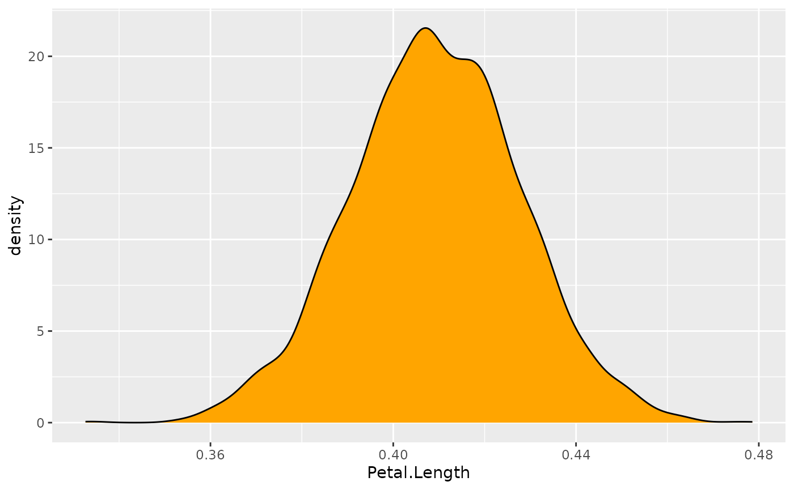

This vignette can be referred to by citing the package:
- Makowski, D., Ben-Shachar, M. S., & Lüdecke, D. (2019). bayestestR: Describing Effects and their Uncertainty, Existence and Significance within the Bayesian Framework. Journal of Open Source Software, 4(40), 1541. https://doi.org/10.21105/joss.01541
Now that you’ve read the Get started section, let’s dive in the subtleties of Bayesian modelling using R.
Loading the packages
Once you’ve installed
the necessary packages, we can load rstanarm (to fit the
models), bayestestR (to compute useful indices), and
insight (to access the parameters).
Simple linear (regression) model
We will begin by conducting a simple linear regression to test the
relationship between Petal.Length (our predictor, or
independent, variable) and Sepal.Length (our
response, or dependent, variable) from the iris
dataset which is included by default in R.
Fitting the model
Let’s start by fitting a frequentist version of the model, just to have a reference point:
>
> Call:
> lm(formula = Sepal.Length ~ Petal.Length, data = iris)
>
> Residuals:
> Min 1Q Median 3Q Max
> -1.2468 -0.2966 -0.0152 0.2768 1.0027
>
> Coefficients:
> Estimate Std. Error t value Pr(>|t|)
> (Intercept) 4.3066 0.0784 54.9 <2e-16 ***
> Petal.Length 0.4089 0.0189 21.6 <2e-16 ***
> ---
> Signif. codes: 0 '***' 0.001 '**' 0.01 '*' 0.05 '.' 0.1 ' ' 1
>
> Residual standard error: 0.41 on 148 degrees of freedom
> Multiple R-squared: 0.76, Adjusted R-squared: 0.758
> F-statistic: 469 on 1 and 148 DF, p-value: <2e-16We can also zoom in on the parameters of interest to us:
get_parameters(model)> Parameter Estimate
> 1 (Intercept) 4.31
> 2 Petal.Length 0.41In this model, the linear relationship between
Petal.Length and Sepal.Length is
positive and significant (\(\beta = 0.41, t(148) = 21.6, p <
.001\)). This means that for each one-unit increase in
Petal.Length (the predictor), you can expect
Sepal.Length (the response) to increase by
0.41. This effect can be visualized by plotting the
predictor values on the x axis and the response values as
y using the ggplot2 package:
library(ggplot2) # Load the package
# The ggplot function takes the data as argument, and then the variables
# related to aesthetic features such as the x and y axes.
ggplot(iris, aes(x = Petal.Length, y = Sepal.Length)) +
geom_point() + # This adds the points
geom_smooth(method = "lm") # This adds a regression lineNow let’s fit a Bayesian version of the model by
using the stan_glm function in the rstanarm
package:
model <- stan_glm(Sepal.Length ~ Petal.Length, data = iris)You can see the sampling algorithm being run.
Extracting the posterior
Once it is done, let us extract the parameters (i.e., coefficients) of the model.
posteriors <- get_parameters(model)
head(posteriors) # Show the first 6 rows> (Intercept) Petal.Length
> 1 4.4 0.39
> 2 4.4 0.40
> 3 4.3 0.41
> 4 4.3 0.40
> 5 4.3 0.40
> 6 4.3 0.41As we can see, the parameters take the form of a lengthy dataframe
with two columns, corresponding to the intercept and the
effect of Petal.Length. These columns contain the
posterior distributions of these two parameters. In
simple terms, the posterior distribution is a set of different plausible
values for each parameter. Contrast this with the result we saw from the
frequentist linear regression mode using lm, where the
results had single values for each effect of the model,
and not a distribution of values. This is one of the most important
differences between these two frameworks.
About posterior draws
Let’s look at the length of the posteriors.
nrow(posteriors) # Size (number of rows)> [1] 4000Why is the size 4000, and not more or less?
First of all, these observations (the rows) are usually referred to as posterior draws. The underlying idea is that the Bayesian sampling algorithm (e.g., Monte Carlo Markov Chains - MCMC) will draw from the hidden true posterior distribution. Thus, it is through these posterior draws that we can estimate the underlying true posterior distribution. Therefore, the more draws you have, the better your estimation of the posterior distribution. However, increased draws also means longer computation time.
If we look at the documentation (?sampling) for the
rstanarm’s "sampling" algorithm used by
default in the model above, we can see several parameters that influence
the number of posterior draws. By default, there are 4
chains (you can see it as distinct sampling runs), that
each create 2000 iter (draws). However,
only half of these iterations are kept, as half are used for
warm-up (the convergence of the algorithm). Thus, the total
for posterior draws equals
4 chains * (2000 iterations - 1000 warm-up) = 4000.
We can change that, for instance:
model <- stan_glm(Sepal.Length ~ Petal.Length, data = iris, chains = 2, iter = 1000, warmup = 250)
nrow(get_parameters(model)) # Size (number of rows)[1] 1500In this case, as would be expected, we have
2 chains * (1000 iterations - 250 warm-up) = 1500
posterior draws. But let’s keep our first model with the default setup
(as it has more draws).
Visualizing the posterior distribution
Now that we’ve understood where these values come from, let’s look at
them. We will start by visualizing the posterior distribution of our
parameter of interest, the effect of Petal.Length.
ggplot(posteriors, aes(x = Petal.Length)) +
geom_density(fill = "orange")
This distribution represents the probability
(the y axis) of different effects (the x
axis). The central values are more probable than the extreme values. As
you can see, this distribution ranges from about 0.35 to
0.50, with the bulk of it being at around
0.41.
Congrats! You’ve just described your first posterior distribution.
And this is the heart of Bayesian analysis. We don’t need p-values, t-values, or degrees of freedom. Everything we need is contained within this posterior distribution.
Our description above is consistent with the values obtained from the frequentist regression (which resulted in a \(\beta\) of 0.41). This is reassuring! Indeed, in most cases, Bayesian analysis does not drastically differ from the frequentist results or their interpretation. Rather, it makes the results more interpretable and intuitive, and easier to understand and describe.
We can now go ahead and precisely characterize this posterior distribution.
Describing the Posterior
Unfortunately, it is often not practical to report the whole posterior distributions as graphs. We need to find a concise way to summarize it. We recommend to describe the posterior distribution with 3 elements:
- A point-estimate which is a one-value summary (similar to the \(beta\) in frequentist regressions).
- A credible interval representing the associated uncertainty.
- Some indices of significance, giving information about the relative importance of this effect.
Point-estimate
What single value can best represent my posterior distribution?
Centrality indices, such as the mean, the median, or the mode are usually used as point-estimates. But what’s the difference between them?
Let’s answer this by first inspecting the mean:
mean(posteriors$Petal.Length)> [1] 0.41This is close to the frequentist \(\beta\). But, as we know, the mean is quite sensitive to outliers or extremes values. Maybe the median could be more robust?
median(posteriors$Petal.Length)> [1] 0.41Well, this is very close to the mean (and identical when rounding the values). Maybe we could take the mode, that is, the peak of the posterior distribution? In the Bayesian framework, this value is called the Maximum A Posteriori (MAP). Let’s see:
map_estimate(posteriors$Petal.Length)> MAP Estimate
>
> Parameter | MAP_Estimate
> ------------------------
> x | 0.41They are all very close!
Let’s visualize these values on the posterior distribution:
ggplot(posteriors, aes(x = Petal.Length)) +
geom_density(fill = "orange") +
# The mean in blue
geom_vline(xintercept = mean(posteriors$Petal.Length), color = "blue", linewidth = 1) +
# The median in red
geom_vline(xintercept = median(posteriors$Petal.Length), color = "red", linewidth = 1) +
# The MAP in purple
geom_vline(xintercept = as.numeric(map_estimate(posteriors$Petal.Length)), color = "purple", linewidth = 1)
Well, all these values give very similar results. Thus, we will choose the median, as this value has a direct meaning from a probabilistic perspective: there is 50% chance that the true effect is higher and 50% chance that the effect is lower (as it divides the distribution in two equal parts).
Uncertainty
Now that the have a point-estimate, we have to describe the uncertainty. We could compute the range:
range(posteriors$Petal.Length)> [1] 0.33 0.48But does it make sense to include all these extreme values? Probably not. Thus, we will compute a credible interval. Long story short, it’s kind of similar to a frequentist confidence interval, but easier to interpret and easier to compute — and it makes more sense.
We will compute this credible interval based on the Highest Density Interval (HDI). It will give us the range containing the 89% most probable effect values. Note that we will use 89% CIs instead of 95% CIs (as in the frequentist framework), as the 89% level gives more stable results (Kruschke, 2014) and reminds us about the arbitrariness of such conventions (McElreath, 2018).
hdi(posteriors$Petal.Length, ci = 0.89)> 89% HDI: [0.38, 0.44]Nice, so we can conclude that the effect has 89% chance of
falling within the [0.38, 0.44] range. We have
just computed the two most important pieces of information for
describing our effects.
Effect significance
However, in many scientific fields it not sufficient to simply describe the effects. Scientists also want to know if this effect has significance in practical or statistical terms, or in other words, whether the effect is important. For instance, is the effect different from 0? So how do we assess the significance of an effect. How can we do this?
Well, in this particular case, it is very eloquent: all possible effect values (i.e., the whole posterior distribution) are positive and over 0.35, which is already substantial evidence the effect is not zero.
But still, we want some objective decision criterion, to say if yes or no the effect is ‘significant’. One approach, similar to the frequentist framework, would be to see if the Credible Interval contains 0. If it is not the case, that would mean that our effect is ‘significant’.
But this index is not very fine-grained, no? Can we do better? Yes!
A linear model with a categorical predictor
Imagine for a moment you are interested in how the weight of chickens
varies depending on two different feed types. For this
example, we will start by selecting from the chickwts
dataset (available in base R) two feed types of interest for us (we
do have peculiar interests): meat meals and
sunflowers.
Data preparation and model fitting
library(datawizard)
# We keep only rows for which feed is meatmeal or sunflower
data <- data_filter(chickwts, feed %in% c("meatmeal", "sunflower"))Let’s run another Bayesian regression to predict the weight with the two types of feed type.
model <- stan_glm(weight ~ feed, data = data)Posterior description
posteriors <- get_parameters(model)
ggplot(posteriors, aes(x = feedsunflower)) +
geom_density(fill = "red")
This represents the posterior distribution of the
difference between meatmeal and
sunflowers. It seems that the difference is
positive (since the values are concentrated on the
right side of 0). Eating sunflowers makes you more fat (at least, if
you’re a chicken). But, by how much?
Let us compute the median and the CI:
median(posteriors$feedsunflower)> [1] 52
hdi(posteriors$feedsunflower)> 95% HDI: [2.76, 101.93]It makes you fat by around 51 grams (the median). However, the uncertainty is quite high: there is 89% chance that the difference between the two feed types is between 14 and 91.
Is this effect different from 0?
ROPE Percentage
Testing whether this distribution is different from 0 doesn’t make sense, as 0 is a single value (and the probability that any distribution is different from a single value is infinite).
However, one way to assess significance could be to define an area around 0, which will consider as practically equivalent to zero (i.e., absence of, or a negligible, effect). This is called the Region of Practical Equivalence (ROPE), and is one way of testing the significance of parameters.
How can we define this region?
Driing driiiing
– The easystats team speaking. How can we help?
– I am Prof. Sanders. An expert in chicks… I mean chickens. Just calling to let you know that based on my expert knowledge, an effect between -20 and 20 is negligible. Bye.
Well, that’s convenient. Now we know that we can define the ROPE as
the [-20, 20] range. All effects within this range are
considered as null (negligible). We can now compute the
proportion of the 89% most probable values (the 89% CI) which
are not null, i.e., which are outside this range.
> # Proportion of samples inside the ROPE [-20.00, 20.00]:
>
> inside ROPE
> -----------
> 4.95 %5% of the 89% CI can be considered as null. Is that a lot? Based on our guidelines, yes, it is too much. Based on this particular definition of ROPE, we conclude that this effect is not significant (the probability of being negligible is too high).
That said, to be honest, I have some doubts about this Prof. Sanders. I don’t really trust his definition of ROPE. Is there a more objective way of defining it?

Prof. Sanders giving default values to define the Region of Practical Equivalence (ROPE).
Yes! One of the practice is for instance to use the
tenth (1/10 = 0.1) of the standard deviation
(SD) of the response variable, which can be considered as a
“negligible” effect size (Cohen,
1988).
> [1] -6.2 6.2Let’s redefine our ROPE as the region within the
[-6.2, 6.2] range. Note that this can be directly
obtained by the rope_range function :)
rope_value <- rope_range(model)
rope_value> [1] -6.2 6.2Let’s recompute the percentage in ROPE:
rope(posteriors$feedsunflower, range = rope_range, ci = 0.89)> # Proportion of samples inside the ROPE [-6.17, 6.17]:
>
> inside ROPE
> -----------
> 0.00 %With this reasonable definition of ROPE, we observe that the 89% of the posterior distribution of the effect does not overlap with the ROPE. Thus, we can conclude that the effect is significant (in the sense of important enough to be noted).
Probability of Direction (pd)
Maybe we are not interested in whether the effect is non-negligible. Maybe we just want to know if this effect is positive or negative. In this case, we can simply compute the proportion of the posterior that is positive, no matter the “size” of the effect.
# select only positive values
n_positive <- nrow(data_filter(posteriors, feedsunflower > 0))
n_positive / nrow(posteriors) * 100> [1] 98We can conclude that the effect is positive with a probability of 98%. We call this index the Probability of Direction (pd). It can, in fact, be computed more easily with the following:
p_direction(posteriors$feedsunflower)> Probability of Direction
>
> Parameter | pd
> ------------------
> Posterior | 98.09%Interestingly, it so happens that this index is usually highly correlated with the frequentist p-value. We could almost roughly infer the corresponding p-value with a simple transformation:
pd <- 97.82
onesided_p <- 1 - pd / 100
twosided_p <- onesided_p * 2
twosided_p> [1] 0.044If we ran our model in the frequentist framework, we should approximately observe an effect with a p-value of 0.04. Is that true?
Comparison to frequentist
>
> Call:
> lm(formula = weight ~ feed, data = data)
>
> Residuals:
> Min 1Q Median 3Q Max
> -123.91 -25.91 -6.92 32.09 103.09
>
> Coefficients:
> Estimate Std. Error t value Pr(>|t|)
> (Intercept) 276.9 17.2 16.10 2.7e-13 ***
> feedsunflower 52.0 23.8 2.18 0.04 *
> ---
> Signif. codes: 0 '***' 0.001 '**' 0.01 '*' 0.05 '.' 0.1 ' ' 1
>
> Residual standard error: 57 on 21 degrees of freedom
> Multiple R-squared: 0.185, Adjusted R-squared: 0.146
> F-statistic: 4.77 on 1 and 21 DF, p-value: 0.0405The frequentist model tells us that the difference is positive and significant (\(\beta = 52, p = 0.04\)).
Although we arrived to a similar conclusion, the Bayesian framework allowed us to develop a more profound and intuitive understanding of our effect, and of the uncertainty of its estimation.
All with one function
And yet, I agree, it was a bit tedious to extract and compute all the indices. But what if I told you that we can do all of this, and more, with only one function?
Behold,
describe_posterior!
This function computes all of the adored mentioned indices, and can be run directly on the model:
describe_posterior(model, test = c("p_direction", "rope", "bayesfactor"))> Summary of Posterior Distribution
>
> Parameter | Median | 95% CI | pd | ROPE | % in ROPE | BF | Rhat | ESS
> ------------------------------------------------------------------------------------------------------------
> (Intercept) | 277.13 | [240.57, 312.75] | 100% | [-6.17, 6.17] | 0% | 1.77e+13 | 1.000 | 32904.00
> feedsunflower | 51.69 | [ 2.81, 102.04] | 98.09% | [-6.17, 6.17] | 1.01% | 0.770 | 1.000 | 32751.00Tada! There we have it! The median, the CI, the pd and the ROPE percentage!
Understanding and describing posterior distributions is just one aspect of Bayesian modelling. Are you ready for more?! Click here to see the next example.